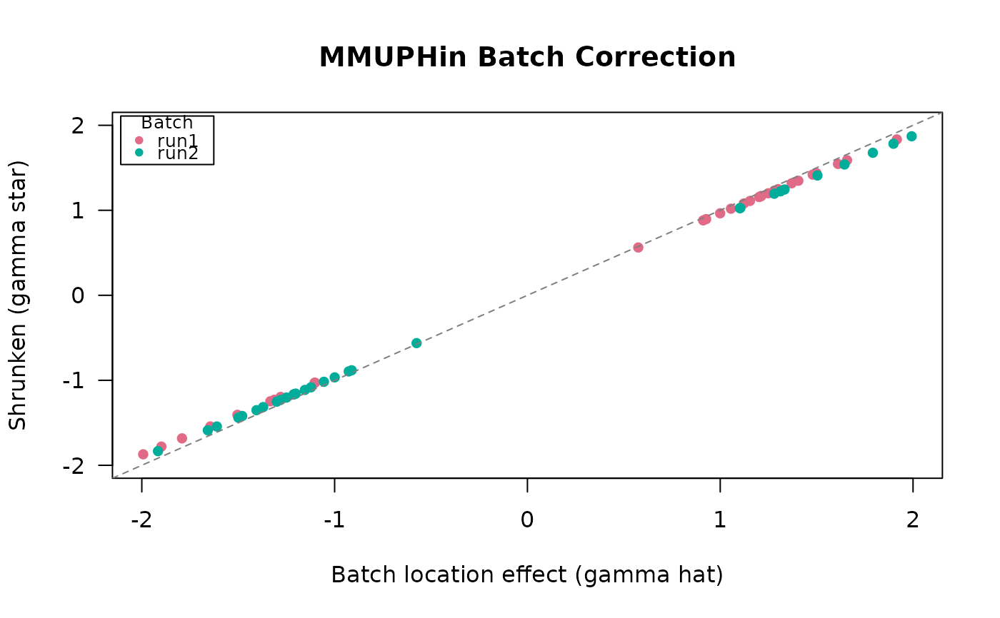

Removes batch effects (study, sequencing run, extraction kit) from a
count or relative abundance table, while keeping the effects of named
covariates: MMUPHin's zero-inflated empirical Bayes adjustment (Ma et al.
2022), a port of MMUPHin::adjust_batch(). Zeros are left out of the
fits and stay zero.
Usage
batch_mmuphin(
counts,
batch,
formula = NULL,
data = NULL,
margin = 1L,
zero_inflation = TRUE,
pseudocount = NULL,
tol = 1e-04,
max_iters = 1000L,
cpus = n_cpus()
)Arguments
- counts
A table of non-negative abundances (samples \(\times\) features): counts, proportions or other non-negative values, or any of the objects listed under Input Types.
- batch
The batch of each sample: one value per sample (matched to the samples by name when both are named), or the name of a column of
data. At least two batches, each of at least two samples.- formula
A one-sided formula over the columns of
datanaming the covariates whose effects are kept, such as~ disease + age. DefaultNULL: none. Covariates left out have their differences between batches removed with the batch effects.- data
A data.frame of sample metadata, with the columns that
batchandformulaname. Rows are matched to the samples by name, or else by position.- margin
The margin containing samples.
1if samples are rows,2if samples are columns. Ignored whencountsis a special object class (e.g.phyloseq). Default:1- zero_inflation
Leave zeros out of every fit (
TRUE, the default), so that a feature is adjusted only in the batches where it is present, and its zeros stay zero.FALSEfits every value (MMUPHin's ComBat-like mode; see "Differences from ComBat").- pseudocount
Added to every value before the log transform. Default
NULL: half the smallest non-zero value (0.5 for counts), as MMUPHin. Withzero_inflation = TRUE,0is allowed: zeros never enter the fits.- tol
The convergence tolerance of the shrinkage iteration (MMUPHin's
conv). Default1e-4.- max_iters
The most iterations of the shrinkage (MMUPHin's
maxit); more is an error. Default1000.- cpus
How many parallel processing threads should be used. The default,
n_cpus(), is the CPU cores this R process may use, within any limits set on it. Results are the same for anycpus.
Value
The corrected table: a dense numeric matrix of class
ecodive_batch in the orientation of counts, with its names. Each
sample keeps its total, zeros stay zero, and a table of whole numbers
(that is not all \(\le 1\)) gives whole numbers (rounded) back.
Attributes:
method"mmuphin".batch_effectsA data frame with a row per feature and batch:
feature,batch,gamma_hatanddelta_hat(the feature's location and scale effects in the batch, on the standardised log scale),gamma_staranddelta_star(after shrinkage).NAwhere the feature was not adjusted in the batch.adjustedA logical per feature: adjusted in any batch. Features that aren't are only re-closed, so they move slightly.
pseudocountThe pseudocount chosen, when
pseudocount = NULL.n_itersThe shrinkage iterations run in each batch.
batch_means,batch_means_adjustedFeature \(\times\) batch matrices of mean relative abundances, before and after.
overall_meansEach feature's mean relative abundance over all samples, before.
The class keeps print() and
plot() short; the result is otherwise an
ordinary matrix, accepted by every function that takes counts, and
x[i, j] or unclass(x) drop the class and attributes. A sparse
input gives a dense result; Matrix::Matrix(x, sparse = TRUE) makes it
sparse again.
Details
The model. Each feature's values are log2 relative abundances, \(y
= \log_2((x + c) / \sum (x + c))\) per sample, with pseudocount \(c\).
With zero_inflation, only the feature's non-zero samples enter, and it
is adjusted in the batches present among them (at least two, with a
full-rank design of those batches and the covariates, and more samples
than columns); a feature present in one batch only is left as it is.
The feature is fitted by least squares on the batch indicators and the
covariates, and standardised:
\(s = (y - \bar\alpha - X\beta) / \hat\sigma\), where \(\bar\alpha\)
is the mean of the fitted batch part and \(\hat\sigma^2\) the
residual variance. Each batch's location and scale,
\(\hat\gamma\) and \(\hat\delta\) (the mean and standard deviation of
\(s\) in the batch), are then shrunk towards their average over
features by empirical Bayes (normal and inverse-gamma priors, estimated
by moments), iterating until the largest relative change is below tol.
The adjusted value is \((s - \gamma^*) / \sqrt{\delta^*} \cdot
\hat\sigma + \bar\alpha + X\beta\): the covariates' effects are kept.
Finally \(2^y\), with the original zeros put back, is re-closed to each
sample's original total.
What to correct for, and what with. Covariates that differ between
batches (a study of patients next to one of controls) must be named in
formula, or their effects are removed with the batches'. A covariate
constant within each batch can't be kept: it is an error. Corrected
tables are for exploration and pooled analyses (ordination, clustering,
prediction). For differential abundance across studies, MMUPHin's authors
and Wang & Lê Cao (2020) advise modelling batch as a covariate, or a
meta-analysis of per-study results, rather than testing corrected values.
The correction is of log relative abundances, re-closed: a compositional
adjustment, which can move features that had no batch effect.
Checking the correction. Ordinate the table before and after,
coloured by batch, and compare PERMANOVA's \(R^2\) for batch (see the
examples); plot(x) shows how much the shrinkage moved each batch
effect.
Differences from ComBat
MMUPHin's adjustment with zero_inflation = FALSE is ComBat with
parametric priors (Johnson et al. 2007; batch_combat()) on log2
relative abundances, except for three details of MMUPHin's code, which
batch_mmuphin() keeps so that it matches MMUPHin:
\(\hat\delta\) is each batch's standard deviation of the standardised values, where ComBat uses the variance, so the inverse-gamma prior is fitted to standard deviations.
The pooled variance divides by \(n - 1\) (ComBat: \(n\)).
The pseudocount is added before the relative abundances are taken, so non-zero values move slightly too.
Differences from MMUPHin
batch_mmuphin() ports MMUPHin 2.0.0's adjust_batch() (MIT license;
Siyuan Ma, Harvard School of Public Health), and its corrected tables
agree with it to rounding, except:
countsis samples \(\times\) features by default (margin); MMUPHin takes features \(\times\) samples.formulanames the covariates, instead of a vector of column names (each its own term); interactions and transformations are allowed.batchanddatafollow ecodive's per-sample rules:batchcan be values instead of a column name, anddata's rows are matched to the samples by name. Batches are the levels of a factor, else the sorted values (MMUPHin converts with a warning).Every batch needs at least two samples.
Tables of non-negative values that are neither proportions nor whole numbers are accepted (and not rounded); MMUPHin stops.
pseudocount = 0is allowed withzero_inflation = TRUE.The least-squares fits use a QR decomposition where MMUPHin solves the normal equations, so very ill-conditioned covariates may agree less closely.
The result is the table, with the estimates kept as attributes; the diagnostic plot is drawn by
plot()in base graphics instead of being written to a PDF file, and nothing is printed while it runs.A sparse input gives a dense result.
Same names in other packages: none. MMUPHin's own function is
adjust_batch().
Input Types
The counts parameter is designed to accept a simple numeric matrix, but
seamlessly supports objects from the following biological data packages:
phyloseqrbiomSummarizedExperimentTreeSummarizedExperiment
For large datasets, standard matrix operations may be slow. See
vignette('performance') for details on using optimized formats
(e.g. sparse matrices) and parallel processing.
References
Ma, S., Shungin, D., Mallick, H., Schirmer, M., Nguyen, L. H., Kolde, R., Franzosa, E., Vlamakis, H., Xavier, R., & Huttenhower, C. (2022). Population structure discovery in meta-analyzed microbial communities and inflammatory bowel disease using MMUPHin. Genome Biology, 23, 208. doi:10.1186/s13059-022-02753-4
Johnson, W. E., Li, C., & Rabinovic, A. (2007). Adjusting batch effects in microarray expression data using empirical Bayes methods. Biostatistics, 8, 118–127. doi:10.1093/biostatistics/kxj037
Wang, Y., & Lê Cao, K.-A. (2020). Managing batch effects in microbiome data. Briefings in Bioinformatics, 21, 1954–1970. doi:10.1093/bib/bbz105
See also
batch_combat(); plot.ecodive_batch(); permanova() and
pcoa() to check a correction.
Examples
# Two runs of ten samples; the second reads ten features 3x higher.
set.seed(1)
counts <- matrix(
rpois(20 * 30, 20), 20, 30,
dimnames = list(paste0('S', 1:20), paste0('F', 1:30)) )
batch <- rep(c('run1', 'run2'), each = 10)
counts[11:20, 1:10] <- counts[11:20, 1:10] * 3
x <- batch_mmuphin(counts, batch)
x
#> # A matrix: 20 samples × 30 features
#> # Batch-corrected (MMUPHin Batch Correction)
#> # 30 of 30 features adjusted
#> F1 F2 F3 F4 F5 F6 F7 F8 F9 F10 F11 F12 F13 F14 F15 F16 F17 F18 F19 F20 F21
#> S1 23 28 19 38 22 18 25 24 25 26 16 15 22 19 16 18 20 18 15 15 19
#> S2 31 17 29 30 32 25 23 23 21 19 19 18 16 14 12 16 12 17 18 23 19
#> S3 31 30 25 23 29 25 18 19 27 33 19 20 12 11 17 21 16 16 12 14 13
#> S4 27 32 29 26 34 25 26 21 38 19 17 16 17 17 14 18 21 11 17 12 17
#> S5 19 23 27 30 29 29 23 38 23 21 14 14 19 15 20 13 19 15 20 12 20
#> S6 29 24 23 33 20 26 23 27 21 19 14 12 15 18 21 16 20 23 26 19 16
#> S7 29 25 21 27 27 23 21 29 21 18 14 14 17 21 17 13 13 11 11 11 15
#> S8 28 23 32 26 30 21 28 25 21 28 16 16 17 15 16 8 18 15 15 13 12
#> S9 24 29 35 22 30 26 37 25 24 27 17 20 12 20 15 18 18 16 16 20 14
#> S10 33 26 24 24 22 26 28 26 29 36 11 14 18 15 20 20 19 22 13 22 24
#> S11 49 30 36 55 36 52 63 52 59 30 28 22 23 29 26 28 40 22 26 19 39
#> S12 40 53 34 51 34 43 49 64 59 40 26 29 32 32 26 18 27 27 18 31 26
#> S13 42 40 68 42 61 43 38 53 40 28 25 35 26 33 25 31 31 31 28 28 38
#> S14 42 55 45 40 52 37 34 55 22 62 30 16 25 30 33 30 43 17 24 29 31
#> S15 48 40 53 40 54 57 36 32 40 30 32 26 31 16 26 24 30 23 22 23 22
#> S16 38 60 48 53 49 39 39 39 51 59 15 20 22 34 28 18 27 33 36 32 23
#> S17 53 49 38 40 61 49 45 31 43 48 23 30 37 31 26 29 22 30 32 27 25
#> S18 51 38 31 54 39 30 36 43 38 58 25 26 25 24 21 23 26 26 30 24 27
#> S19 56 49 61 49 47 35 51 46 43 41 32 35 21 20 33 32 22 32 28 19 27
#> S20 53 36 47 55 46 41 48 37 47 36 25 24 28 30 30 30 25 27 27 27 23
#> # … 9 more columns: F22, F23, F24, F25, F26, F27, F28, F29, F30
#> # Attributes: method, batch_effects, adjusted, pseudocount, n_iters,
#> # batch_means, batch_means_adjusted, overall_means
# Batch's share of the variation, before and after.
permanova(bray(counts), batch)$statistic
#> F
#> 51.06708
permanova(bray(x), batch)$statistic
#> F
#> 42.71473
plot(x)

# Keep a covariate's effect: name it in `formula`.
meta <- data.frame(run = batch, sex = rep(c('F', 'M'), 10))
batch_mmuphin(counts, 'run', ~ sex, meta)
#> # A matrix: 20 samples × 30 features
#> # Batch-corrected (MMUPHin Batch Correction)
#> # 30 of 30 features adjusted
#> F1 F2 F3 F4 F5 F6 F7 F8 F9 F10 F11 F12 F13 F14 F15 F16 F17 F18 F19 F20 F21
#> S1 23 28 19 38 22 18 25 24 25 25 16 15 22 19 16 18 20 18 15 15 19
#> S2 31 17 29 30 32 25 23 23 22 19 19 18 16 14 12 16 12 17 18 23 19
#> S3 31 29 25 23 29 25 18 19 27 33 19 20 12 11 17 21 16 16 12 14 13
#> S4 27 32 29 26 34 25 26 21 38 20 17 16 17 17 14 18 21 11 17 12 17
#> S5 19 23 27 30 29 29 23 38 23 21 14 14 19 15 20 13 19 15 20 12 20
#> S6 29 24 23 33 20 26 23 27 21 19 14 12 15 18 21 16 20 23 26 19 16
#> S7 29 25 21 27 27 23 21 29 21 18 14 14 17 21 17 13 13 11 11 11 15
#> S8 28 23 32 26 30 21 28 25 21 28 16 16 17 15 16 8 18 15 15 13 12
#> S9 24 29 35 22 30 26 37 25 24 27 17 20 12 20 15 18 18 16 16 20 14
#> S10 33 26 24 24 22 26 28 26 29 36 11 14 18 15 20 20 19 22 13 22 24
#> S11 49 30 36 55 36 52 63 52 59 30 28 22 23 29 26 28 40 22 26 19 39
#> S12 40 53 34 51 33 43 49 65 59 40 26 29 33 32 27 18 27 27 18 31 26
#> S13 42 40 69 42 61 43 38 53 40 28 25 35 26 33 25 31 31 31 28 28 38
#> S14 42 55 45 40 52 37 34 56 22 63 30 16 25 30 33 30 43 17 24 29 31
#> S15 48 40 53 40 54 57 36 32 40 30 33 27 31 16 26 24 30 23 22 23 22
#> S16 38 60 48 53 49 39 39 39 51 60 15 20 22 35 28 18 27 33 36 32 23
#> S17 53 49 38 40 61 49 44 30 43 48 23 30 37 31 26 29 22 30 32 27 25
#> S18 50 38 31 54 39 30 36 43 38 58 25 26 25 24 21 23 26 26 30 24 27
#> S19 56 49 61 49 47 35 51 46 43 41 32 36 21 20 33 32 22 32 28 19 27
#> S20 53 36 47 55 46 41 48 37 47 36 25 24 28 30 30 30 25 27 27 27 23
#> # … 9 more columns: F22, F23, F24, F25, F26, F27, F28, F29, F30
#> # Attributes: method, batch_effects, adjusted, pseudocount, n_iters,
#> # batch_means, batch_means_adjusted, overall_means